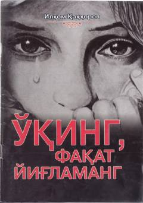

UFQalbni yumshatuvchi va o'ylantiruvchi ta'sirli hayotiy hikoyalar to'plami.
Ushbu kitob inson qalbini yumshatuvchi, hayot haqida o'ylashga undovchi ta'sirli hayotiy voqea va hikoyalarni o'z ichiga oladi. Muallif qattiqlashgan qalblarni ezgu amallarga chorlash va ibrat olish maqsadida ushbu to'plamni tuzgan. Kitobdagi har bir hikoya o'quvchini chuqur o'ylantiradi va qalb ko'zini ochishga xizmat qiladi.